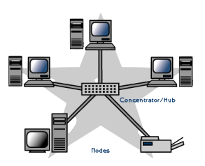

¿Qué es la topología de Estrella?
La topología de estrella es una configuración de red donde cada dispositivo se conecta a un concentrador o conmutador central, formando una estructura similar a una estrella.
Esta configuración facilita la gestión y resolución de problemas, ya que un fallo en un dispositivo periférico no afecta al resto de la red. Sin embargo, la falla del dispositivo central puede desconectar toda la red.

CARACTERISTICAS
- Conexión centralizada: Todos los dispositivos de la red (nodos) están conectados a un dispositivo central, que actúa como el punto de control y comunicación para todos los nodos conectados.
- Es fácil de instalar y administrar: Dado que todos los dispositivos están conectados a un punto central, es más sencillo identificar fallos y gestionar la red. Cada conexión es independiente, lo que facilita la instalación y la ampliación de la red.
- Falla del nodo central: Aunque la red sigue funcionando si uno de los dispositivos falla, si el dispositivo central deja de funcionar, toda la red se cae. Pero el fallo de los dispositivos no afecta a los demás nodos, ya que cada uno tiene su propia conexión directa al nodo central.
- Desempeño y gestión del tráfico: En una topología en estrella con un switch, el tráfico de la red puede gestionarse de manera eficiente, porque el switch envía los datos solo al dispositivo destinatario. Sin embargo, en una configuración con un hub, todos los datos se transmiten a todos los nodos, lo que puede generar tráfico innecesario y reducir el rendimiento.
Ventajas y Desventajas de la Topología de Estrella
Ventajas

- Aislamiento de fallos: Si falla un nodo o su conexión, los demás siguen funcionando.
- Flexibilidad: Permite agregar o quitar equipos fácilmente sin alterar el funcionamiento de la red.
- Buen rendimiento: Puede manejar cargas de trabajo pesadas y las comunicaciones entre los nodos periféricos y el central son rápidas.
Desventajas

- Punto único de fallo: Si el cable troncal se rompe, toda la red se cae.
- Costo: Requiere más cableado, ya que cada dispositivo necesita su propio cable para conectarse al centro.
- Dependencia del concentrador: El rendimiento de toda la red depende del funcionamiento del concentrador central.